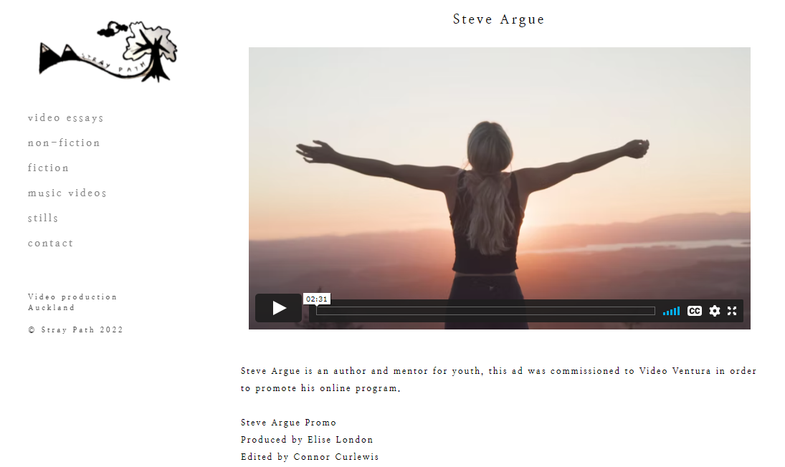
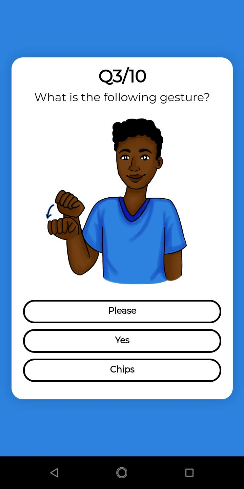
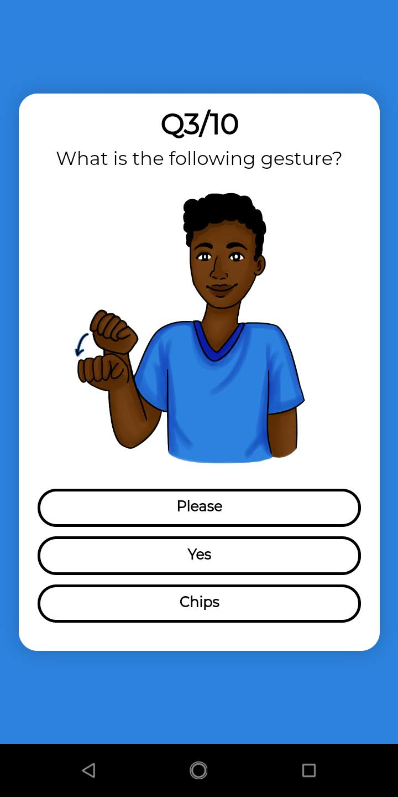

WEBSITES
elementary


A searchable periodic table, developed in 2020 -- mostly during lockdown. Elements are searchable by name, symbol, atomic number, category, property, or discovery date.
PCT map
Dynamic map of signaturies of the PCT
Stray path

A portfolio website I made for my old flatmate
Larrikins


Cartoon archive
MOBILE
SLIC NZ andriod app
 

SLIC NZ started as a student project for a young entrepeneur competition. As part of that competition, they wanted an adriod app built for their